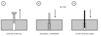

| When | Do | See |
|---|---|---|
| Day 0 | Write down the step at the joint (straightedge at the inside corner). | Check 5, Fig. J-5 |
| Two weeks | Retighten every screw. Straightedge at the joint again; if the corner has settled, retighten the six fitting bolts to 25 N·m. Look at each printed ring and its three screws. | Checks 5 and 10; troubleshooting |
| One month | Straightedge at the joint again; retighten the six fitting bolts if it settled. | Check 5 |
| Any time | If the corner ever drops a millimetre, retighten the six fitting bolts. | Corner bolts, below |
The mending plates across the joint align the tops; they do not carry the corner. SOURCE-DEFINED
| Symptom | Cause | Fix |
|---|---|---|
| Corner has dropped; step at the joint grew | The six fitting bolts lost clamping force (friction joint); supports settling | Bring the surfaces flush with the OLOV feet and the round feet, never by packing anything under the joining plates. Check rail B's end still touches rail A. Retighten all six bolts to 25 N·m. Write the new step down (Fig. J-5). |
| Top moves on its ALEX, or a pad spins or rocks | A pad is out of its ring or not bearing | Lift that ALEX end a few millimetres and slide the ALEX unit, not the top, until the pads drop into their rings. Each foot set with the 102 mm foot height gauge, no rock. Level along x and y; re-check 83.0 cm at the corners (Figs. J-1, J-4). |
| Printed ring cracked or its screws loose | Ring wall overloaded by a sideways push | Inspect at two weeks. A crack: reprint the ring (parts/structure/foot-ring.stl), PETG or ABS, flange-down: 52 mm bore, 3 mm wall, 75 × 2.5 mm flange. Refit with #6 × 5/8 in flat-head screws (H06), 5/64 in pilots 12 mm deep (12 ALEX puck). Never run the desk with a ring missing. |
| Leg moves or wobbles | OLOV plate screws loose | Retighten the five M4 × 16 mm screws (H01). A screw that spins: repair the hole (below), re-pilot 1/8 in, 15 mm deep (15 LEG puck). Re-set the OLOV to 80.2 cm, or the ALEX-feet table's number. |
| Monitor clamp creeps | Clamp loosened over time | Retighten the clamp with the crossbar fitted. Keep the steel plate (P11) flat on its outline under the jaw. Never add a soft pad under the jaw. |
| Screw spins (stripped) | Hole worn in the particleboard | Back it out, fill the hole with wood glue and a couple of matchsticks, let it dry, re-pilot. |
| A mark is off by more than 2 mm | Marking error | Redraw it. A stray 1/8 in hole in the underside does no harm. |
| A fitting bolt will not go in | Holes not quite in line | Open the hole in the rail with a round file; never force it. |

Every fix above is from the build manual and the build guide SOURCE-DEFINED.